Page 1 / 原始页码 767
第 11 篇 植物的生长和繁殖
植物根发育模式的控制
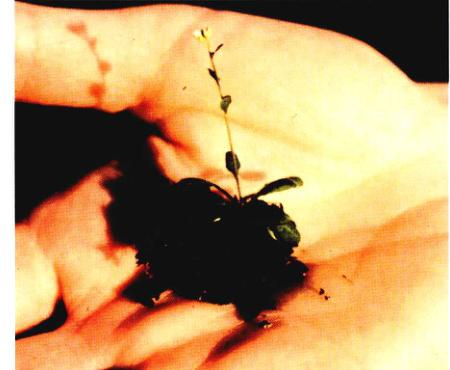
拟南芥 由于它提供了一个根组织组织的简单模式，因而研究根发育的重要材料。
你是否曾经想过根是怎样生长的吗？在黑暗的地下，仅有重力作为引导，根尖不断地伸长，并定期形成一个个节点，从此处不断形成侧根的分支……那么根是怎么决定各侧根的位置以及它们彼此之间距离的大小的呢？其实，根部各侧根的一系列组织都是由发生在根尖（即根最顶端的部位）的各种事件控制的。在这大约只有 1 mm 或者更小的范围内，许多分子事件协调有序地发生，决定了根如何生长以及最终长成什么形态。
了解植物根尖是如何控制根的发育模式，将为研究更大的、甚至可能是现代植物学领域最具挑战性的问题，即究竟什么机制调节着植物界中重要的模式的形成，提供一个范例。十几年前，关于这些机制我们几乎是一无所知，但是，现在这方面的深入研究正在迅速填补这一领域的空白。
许多关于植物发育的研究工作都是以一种十字花科植物——拟南芥 (Arabidopsis)（见右上图）为模式生物进行的。拟南芥单个体植株虽然没有长得特指长，但它在试管里能够很快生长，因而研究植物发育的理想材料。它的果概极小的大全基因组序列已经测序完成，极大地推动了整个研究进入分子水平，为植物发育过程型的研究奠定了基础。
为了对正在进行的研究工作有一些更深入的了解，我们将把目光集中到密歇根 (Michigan) 大学的 John Scheifelbein 和他的同事们的工作上。Scheifelbein 把研究植物如何发育的重点放在一个严格定义的部位，即拟南芥根部表皮（根最外层细胞）的根毛，这一结构的形成上。根毛组成了根最重要的吸收面，它们的位置是受到严格控制的。
简单来说，根毛如何适当分布这一问题的核心就是要在细胞的增殖与分化之间找到一种平衡。根表皮下的分生区（一种分生组织）细胞永远在不停地分裂。这些由分生组织生成的细胞继续分化成两种不同类型的细胞：① 生毛细胞 (trichoblast)，它们发育成有根毛的表皮细胞；② 不生毛细胞 (atrichoblast)，顾名思义，它们形成无根毛的表皮细胞。生毛细胞在不生毛细胞中的分布将决定正在生长的根毛的分布模式。
当仔细观察分裂着的根尖分生组织时，研究者们发现，生毛细胞和不生毛细胞的初始细胞围绕根成环状交替排列的 16 个细胞。随着细胞的分裂，新细胞不断产生，形成的 16 列细胞不断向外延伸。随着这些列向外延伸得越来越远，偶尔也发生侧向分裂以填补产生的空隙，从而形成新的细胞列。
维持这一简单的结构需要对细胞的分裂面和分裂速度有严格的控制。由于上述两种细胞的细胞分裂速度是不一样的，为了分析必须控制细胞的分化速度。Scheifelbein 开始着手研究根尖是如何协调这两个过程的。
为了解上述过程，Scheifelbein 选择了最近发现一个特殊的根突变株，称为透明的外种皮 (transparent testa glabra, TTG)。这个突变体改变了拟南芥根毛的形成模式，并且该突变基因被认为控制着一个细胞是成为生毛细胞还是不生毛细胞。但是，它是否也控制根分生组织表皮细胞（即原表皮层细胞。译者注）的分裂速度和方向呢？
为了回答这个问题，Scheifelbein 研究小组利用克隆分析技术，在显微镜下确定了根表皮每个细胞的类型，然后看它们是否有不同的分裂速度，以及 TTG 突变是否对不同类型的细胞分裂速度有不同的影响。如果是，那从植物体内细胞的分化和对细胞分裂的控制之间必然有一定联系。
Page 2 / 原始页码 768

对比根表皮生毛细胞 (T细胞) 与不生毛细胞 (A细胞) 的分化与细胞分裂 (a) 随着细胞分裂的进行，分别鉴定野生型、gl2 型和 TTG 型植株根表皮中的 T 细胞和 A 细胞。在 TTG 突变型中，T 细胞和 A 细胞数量之比有增加。(b) 我们还可以通过对比野生型和突变型中 T 细胞和 A 细胞纵向可能性的比例大小之比来检测细胞分裂速度大小。TTG 突变型中这一比例最低，说明这种突变影响细胞分裂。
实 验
选择两株发育中的拟南芥 (A. thaliana) 的突变株，用来研究细胞分化的控制是否与细胞分裂的速度有关。其中，TTG 突变改变受控制的分子事件发生在根表皮细胞分化的早期，而另一种 glabra2 (gl2) 突变型，改变的分子事件相对较晚发生。
研究者首先画出每种突变株的根表面图，包括未突变的野生型。为避免研究各层细胞时造成混乱，先要明确确定各列细胞的起始点。为此，所挑选的根都包括通过垂直分裂得到的生毛细胞和不生毛细胞的克隆。径向垂直分裂的细胞分裂方式是少见的，但是用碘化丙锭染色之后很容易识别。利用共聚焦显微镜对每个细胞仔细作图，研究者可以确定在每一克的表皮组织中生毛细胞和不生毛细胞的数量和位置。
结 论
根据对各种不同类型植株根中生毛细胞和不生毛细胞的鉴定，研究者获得了两个重要的发现。
① 不同类型的细胞以不同的速度增殖 对比经历 6 次细胞分裂的植株，研究者注意到，在细胞分裂 2 次或多次后，生毛细胞 (T 类) 和不生毛细胞 (A 类) 的比例有显著的差异。与野生型或 gl2 型相比，TTG 突变株中 T 类细胞与 A 类细胞的比例明显小很多（上图 a）。这很好地说明 TTG 突变与生毛细胞分裂速度的控制有关。
② TTG 突变控制径向细胞分裂的速度 研究人员继续研究径向垂直分裂，径向垂直分裂将填补细胞分裂导致的各列细胞由分生组织向外扩张引起的空隙。研究者要确定径向垂直细胞分裂在图 a 所示 3 种植株类型的细胞中发生的可能性。细胞层生成得越快，径向细胞分裂发生的就越频繁，以便填补各细胞层列的空隙。为了使根毛保持在合适的位置，这一径向分裂速度必须与细胞层中的垂直分裂保持严格的协调一致。
研究人员发现，尽管径向细胞分裂总是很少见，但是一旦发生，则经常是在生毛细胞层。TTG 突变是否影响了径向细胞分裂以及细胞列的向外扩张？考察径向垂直分裂发生在生毛细胞和不生毛细胞中可能性的比例 (PLT/PLA) 之后，这个问题将得到回答。
研究人员比较了野生型植株和其他两种突变株中这一比例的变化。TTG 突变会影响径向分裂吗？是的！他们的结论表明，与野生型和 gl2 型相比，TTG 突变株中上述比例至少降低了 60%（上图 b）。TTG 突变株中，不生毛细胞发生径向细胞分裂的可能性是野生型或者 gl2 型中的两倍。
这一研究结果直接支持了关于 TTG 基因的假说，即它不仅在生毛细胞层的细胞分裂中需要，而且还控制着在生毛细胞中表现得更频繁的径向细胞分裂。
研究小组从这些研究中得出结论：TTG 很可能是对根表皮细胞具体分化控制的第一站，而这一控制很可能通过对生毛细胞命运的负调控来实现。
Page 3 / 原始页码 769
第 40 章 植物的早期发育

图 40.1 一棵初生的植株 它正在朝着阳光，尽情地舒展着它的茎和叶。
在第37章中，我们重点讨论了生殖和生理方面的进化变化，这种进化最终产生了一个相当成功的植物类群，即开花植物（也就是被子植物）。第38、39章讨论了被子植物孢子体在形态学上和解剖学上的发育情况，许多新的变化都出现在孢子体中。在接下来几章中，我们继续把重点放在被子植物孢子体的发育上。多数情况下，我们会以芥菜家族中的野生种类——模式植物拟南芥 (Arabidopsis) 为代表。它极小的基因组使得植物学家能够够研究基因在植物的生长发育过程中的调节作用。本章我们将讨论种子萌发过程中胚的发育情况（图 40.1）。以后的几章将连续讨论基因表达、激素和各种环境信号在调节植株发育和功能中的作用。
Page 4 / 原始页码 770
40.1 植物胚的发育奠定了植株的雏形
40.1.1 根茎轴的形成
在植株中，三维立体形态的形成是由细胞分裂数量和模式所调控的。即使是早期，细胞分裂也不是对称的，这将导致两种不同类型的细胞的出现。在胚发育的早期，大多数细胞能产生不同类型的细胞和器官，包括叶子。随着发育的进行，具备多种发育潜能的细胞主要局限在分生组织区。当胚发育结束，种子开始休眠时，很多分生组织就形成了。种子萌发后，顶端分生组织会继续在生长的根尖和茎尖部分增加细胞。如玉米的顶端分生组织的细胞，每12小时分裂一次。在一株生长旺盛的玉米中，一天能生成 50 万个细胞。侧生分生组织能促进一些植物的加粗生长，而草本植物茎中的居间分生组织则能够使它们伸长。
在胚发育过程中，除了形成根茎轴外，也发生细胞的分化，进而形成 3 个组织系统，即皮组织系统、基本组织系统和维管组织系统。这些组织呈放射状分布，包含许多高度分化的具有某些特定功能的多种类型的细胞。上述 3 个组织都是围绕根茎轴呈放射状分布的。
胚发育的同时，还有两件重要的事件在发生。第一个是在胚获得光合作用能力前，确定营养供应，满足种子萌发时的需要。在被子植物中，双受精产生提供了养分的胚乳。而在裸子植物中，来自配子体本身就是食物源。第二个重要事件是胚珠组织（来自亲本孢子体）的分化，从而形成了一个包裹胚的硬保护层。种子（包含胚的胚珠）随后进入休眠期，标志着胚发育的结束。像水、温度、光照等环境信号都能打破种子的休眠，从而激发一连串的内部反应，最终导致种子的萌发。
早期细胞的分裂和成型
显花植物中受精卵的第一次分裂是不对称的，因而产生两种不同命运的细胞（图 40.2）。一个子细胞体积小，细胞质稠密。这个将来会发育成胚的细胞开始在不同的平面内反复分裂，形成一个多细胞球。另外一个较大的子细胞反复分裂，形成一个称为胚柄 (suspensor) 的柄状结构。胚柄将胚和种子的营养组织连接起来，并提供一条使养分到达发育着的胚的途径。此时，根茎轴也形成了。靠近胚柄的细胞将形成根，而那些在轴另一端的细胞则最终形成茎。
研究植物胚发育中的不对称性机制的形成是很困难的，因为受精卵深植于配子体中，而配子体又由孢子体组织（包括胚珠和心皮组织）包围。一种方法是利用墨角藻 (Fucus)（褐藻门）作为模式系统。虽然褐藻和被子植物在进化上有很大的差别，但它们的早期胚发育所表现出的相似性表明它们可能有共同的起源。在这种褐藻中，卵子在受精之前就已经释放出来，所以没有其他...
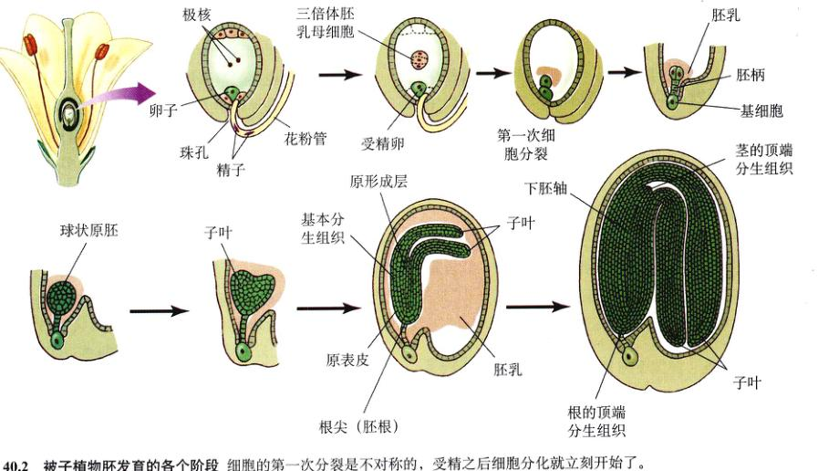
图 40.2 被子植物胚发育的各个阶段 细胞的第一次分裂是不对称的，受精之后细胞分化就立刻开始了。
Page 5 / 原始页码 771
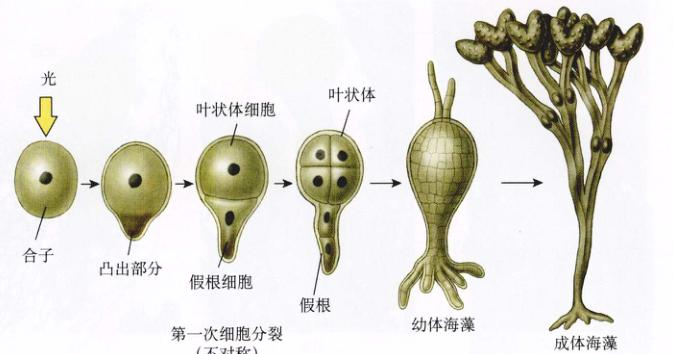
图 40.3 墨角藻 (Fucus) 受精卵的不对称分裂 受精卵中物质的不均匀分布导致受精卵的凸出，而这也发生第一次细胞分裂。这次分裂形成较小的细胞会继续分裂生成固着植物的假根，较大的细胞继续分裂形成叶状体或者植株主体。精子的进入点决定了较小的假根细胞的形成部位，但是光和重力能对行其进行调整以确保假根指向下方并固着这一褐藻。钙介导的液流形成了一个带电分子内部梯度，导致细胞壁软化，并从中形成假根。这两个决定性细胞的命运是通过细胞壁的成分而产生“记忆”的。
组织围在受精卵的周围。受精卵的一边发育形成凸出部分，建立垂直轴。随着细胞分裂，原来的凸出部分形成两细胞中较小的那个，并进而发育成的着藻的假根，而另一个细胞发育成为褐藻的孢子体的主要部分，即叶状体。这个轴在精子进入时就已经确立，但它也能被环境信号所改变，尤其是光和重力。这些信号能够确保假根向下生长而叶状体向上生长。内部各种化学因素因环境信号而形成，相应地决定假根在哪些特定区域形成（图 40.3）。细胞壁的存在使得胚能“记得”何处应该发育成为假根。对于那些特定形成假根或者叶状体的细胞而言，当用酶除去其细胞壁后，这些细胞都能发育成假根或者叶状体。细胞壁中含有丰富的碳水化合物，以及与之的结构纤维相连的蛋白质。揭示这些信号可能的发育信号的实质是当今很活跃的研究课题。
基因技术使研究被子植物的不对称发育成为可能。研究突变株可以揭示发育过程中发生了什么错误，从而有可能推测正常的发育机制。例如，拟南芥的胚柄突变导致胚异常发育，进而导致胚柄像胚一样发育（图 40.4）。分析这个突变可得出一个结论：胚柄抑制了胚柄发育成第二个胚。
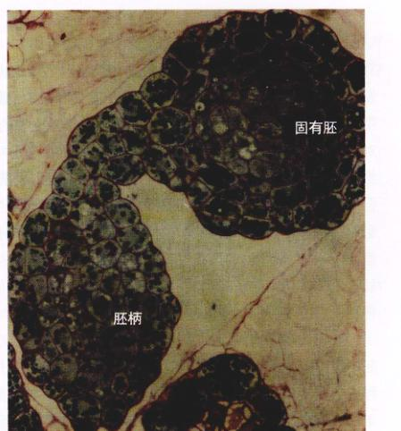
图 40.4 胚抑制胚柄发育成为第二个胚 拟南芥的胚柄突变体在胚发育时存在缺陷。胚发育不完全，胚柄就接着像胚一样发育了。
40.1.2 三个组织系统的形成
当植物胚还是个细胞球时（球形胚阶段），3 个基本组织就开始分化，但是并不涉及细胞的迁移（图 40.5）。原表皮层 (protoderm) 由植物胚最外层的细胞组成，将来形成皮组织 (dermal tissue)。由于这些细胞进行垂周分裂，致使胚的外面总存在一个单细胞层。皮组织产生能防止植株失水的细胞，包括气孔。植物通过气孔的关闭来调控气体交换并最大限度减少水分丧失。基本分生组织 产生了胚内部的主干，后者主要由基本组织 (ground tissue) 细胞组成，最终用于储存食物和水分。最后，胚中央的原形成层 (procambium) 将发育成维管组织 (vascular tissue)，负责水分和营养物质的运输。
Page 6 / 原始页码 772
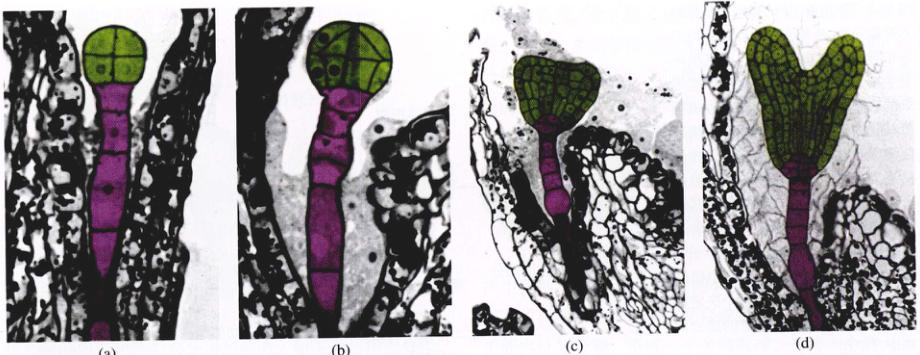
图 40.5 拟南芥胚发育的各个阶段 (a) 早期细胞分裂形成胚和胚柄，(b) 球形期，(c)、(d) 心形期。
1) 根和茎的形成
根茎轴在发育的球形胚阶段形成。茎尖分生组织随后发育形成叶，并最终产生生殖结构。由于茎尖和根尖的分生组织都是顶端分生组织，故它们的形成是单独受控的。对拟南芥突变株的分析证实了这一结论。例如，茎分生组织缺失 (shootmeristemless, stm) 的突变株不能形成茎，但却能生成根（图 40.6）。用同样的方法也确定了根分生组织的特异性基因。例如，一种拟南芥的变异株就没有根。生长素在根茎轴的形成过程中或许也发挥了作用。生长素是调节植物生长和功能的六大植物激素之一。我们将在以后的章节中更详细地讨论每一种激素。
在研究种子萌发后根茎的发育过程时，我们注意到，胚中组织分化的很多相同模式在顶端分生组织的分化过程中会重复出现。本章前面也讨论了许多胚发育特有的事件。比如，拟南芥的 LEAFY COTYLEDON 基因在胚发育的早期、后期都很活跃，可能与维持胚发育的环境有关。运用 DNA 重组技术有可能使该基因在胚发育的后期再开启（见第 43 章）。如此，胚就可以在叶子上形成。
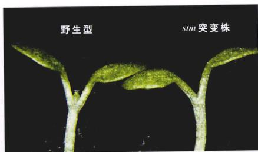
图 40.6 茎特异基因决定茎顶端分生组织的形成 拟南芥的茎分生组织缺失 (stm) 突变株有正常的根分生组织，但没有产生茎分生组织。
2) 形态建成
在球形胚期，可产生心形胚。双子叶植物（图 40.5）的心形胚有两个突起，而单子叶植物的心形胚只有一个突起。这些突起就是子叶 (first leaves)。子叶由胚细胞生成，而不是来源于球形胚所形成的茎尖分生组织。这个称为形态建成 (morphogenesis) 的过程取决于细胞分裂的分裂面和分裂速度的变化。植物细胞不能移动。植物体的形成在很大程度上是由细胞的分裂面决定的。当然，也会受到因渗透作用导致的细胞膨胀的变化的控制。
微管和肌动蛋白在决定细胞分裂方向的细胞板位置的确立中起作用。植物激素和其他因素会影响细胞膜内侧上微管束的取向。当细胞壁围绕纺锤周围形成时，这些微管还可以指导纤维素的沉积。这个过程决定了细胞的最终形态。如果把一个细胞想像成一个立方盒子，其 6 个面中有 4 个面因纤维素而加固，那么细胞自然向着加固较少的剩下的两个面伸展、生长。有关形态建成在细胞生物学水平的很多知识是通过突变株获得的，这些突变株细胞能够分裂，但却无法控制细胞分裂的分裂面或者是细胞伸展的方向。
3) 食物储存
在胚的整个形成过程中同时产生淀粉、脂肪和蛋白质。种子中储存的蛋白质尤其丰富，以致植物分子学家把编码它们的基因作为首选的克隆靶标。提供营养资源以提高胚的生存力是进化的趋势之一（见第 37 章）。被子植物...
Page 7 / 原始页码 773
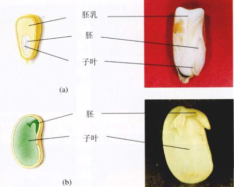
图 40.7 玉米和大豆的胚乳 玉米种子在成熟时还有胚乳存在，而大豆中的胚乳则消失了，由大豆胚中的子叶承担储存养分的功能。
的孢子体通过胚柄运输养分（在裸子植物中，胚柄的作用仅仅是将胚送至接近配子体营养源的位置），这一过程与胚乳的发育是同步进行的。虽然在裸子植物麻黄属植物 (Ephedra) 中也观察到双受精现象，但胚乳只在被子植物中出现。椰子的胚乳就是里面的“奶汁”，呈液态。玉米的胚乳则是固态的，做爆米花时，胚乳由于受热膨胀破裂而成为可食用部分。在豌豆和大豆中，胚乳在胚发育时被耗尽，其中的养分储存在了厚厚的肉质子叶中（图 40.7）。植物光合作用的机能是为了适应光环境而建立的，在胚孢子体能够进行光合作用之前，种子储存养分以供种子萌发用是很重要的。埋得太深的种子往往在它接触到地表和阳光之前就已经由于细胞呼吸而耗尽了所有的储备。
40.2 种子防止休眠期的胚失水
40.2.1 种子是如何形成的
胚珠细胞的外层形成保护性的种皮，里面的胚或者由营养组织包围，或者有大量的食物储存在它的子叶中。
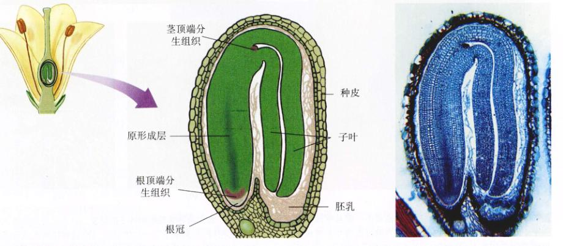
图 40.8 被子植物成熟的胚 注意两片子叶为适应种子的有限空间已经弯曲生长。在某些胚中，茎顶端分生组织已经形成了一些叶原基。
Page 8 / 原始页码 774
如此包裹的种子就能抵抗干旱或者其他恶劣的环境条件。在种子的休眠期，它还可以把胚传播到很远的地方，并能使植物胚在成熟植株不能生存的地方生存下来。在一些胚中，由于坚硬的胚珠壁（现在已经是种皮）包围的空间有限，子叶不得不弯曲，而且为了更有效地储存物质，体积也必须相对变小（图 40.8）。注意，胚珠壁实际上是来自上一代孢子体组织的。
种子适应环境的重要性
在被子植物胚发育的早期，发生了一件意义深远的事情：胚停止了发育。很多植物的胚在完成了分生组织和子叶的分化后不久，就停止了发育。胚珠外层细胞——珠被 (integuments) 发育成一个相对不通透的种皮，它包裹着由休眠胚和营养物质组成的种子。种子适应的重要性至少体现在以下四个方面：
(1) 它们在恶劣的环境中保持休眠，延迟发育直至更好的环境条件出现。如果环境条件刚刚好转，植株会计一部分种子先萌发，而其他的将仍保持休眠。
(2) 当幼苗处在发育过程中最脆弱的阶段时，它们提供最大限度的保护。
(3) 它们储存养分以备在幼苗能有效地利用光合作用带来的能量之前，为幼苗的发育提供能量。
(4) 也许是最重要的一点，它们适宜传播，易于将植物基因移植或者散布到新的环境。
种皮一旦形成，大多数的新陈代谢活动就停止了。一颗成熟的种子大约只含有 5%~20% 的水分。在这种环境下，种子及其幼苗都非常稳定。这是具有进一步意义的：胚中严重的干燥以及相应的新陈代谢的减缓，最终导致了生长受限。只有当水和氧气接触到胚时，萌发才会开始。
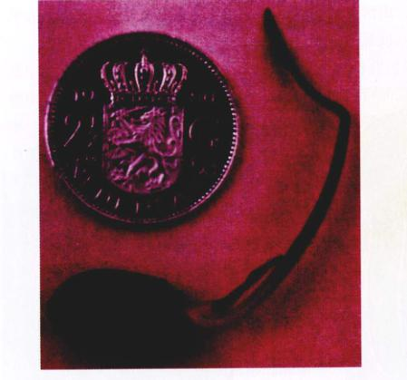
图 40.9 种子能长时间休眠 这棵幼苗是由一颗从中国东北的一个干涸湖底的淤泥中发掘出来的莲花种子发育生长而成。放射性碳测定表明，它是公元 1515 年形成的。照片中的硬币只是为了显示种子的大小。
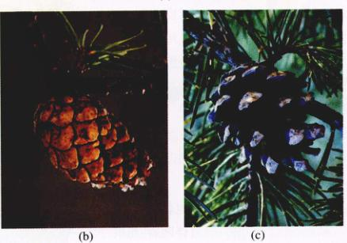
图 40.10 大火诱导某些松树种子的萌发 (a) 大火将会毁坏这些成年的松树，却刺激了下一代的生长。(b) 这种松树的球果密封着，无法释放被鳞片保护着的种子。(c) 高温致使种子释放。
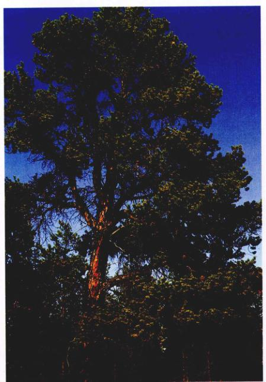
Page 9 / 原始页码 775
始，同时种皮也由于磨损或者交替地冻融而破裂。已知有些植物的种子能够存活好几百年，少数甚至能活几千年（图 40.9）。
特殊的适应性往往有助于确保植株只在适当的条件下萌发。有时候，位于粗糙的球果中的种子只有暴露在火中受热才能开裂（图 40.10）。这使得植株在大火侵蚀过的开阔地萌发。由于该地区植物经大火吞噬后释放出大量的养分，因此土壤营养比较丰富。另外有些植物的种子只有当那些抑制性的化学物质从种皮上滤去之后才能萌发，因为水充分足时才能保证它们的萌发。还有一些植物的种子只有当它们经过鸟类或者哺乳类的肠道，或者被反刍之后才能萌发。如此，种皮变得容易破裂，而且保证了植物的散布。有时，在某地区已经灭绝的植物的种子有可能在另外某个特殊的或者环境更好的地方萌发，这样，这种植物就可能重新出现。
40.3 果实的形成有利于种子的传播
40.3.1 果实是如何形成的
被子植物的果实——也就是成熟的子房（心皮）一直伴随着与被子植物的花同样壮观地进化着。种子形成时，花的子房就开始发育成及果实。果实可以以多种方式形成，相应地就能广泛地泛地适应当。
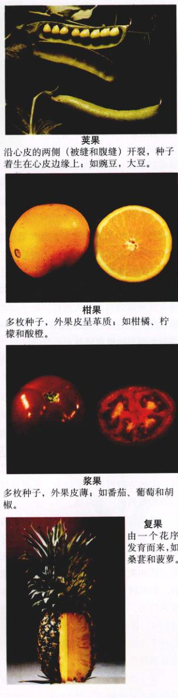
图 40.11 几种果实的代表 每一类水果类型的鉴别特征都列在各自图的下面。莓果、荚果和翅果是干果的代表。核果、浆果和柑果都是单肉果，它们由单个雌蕊的花发育而来。聚合果和复果是复合的肉果，它们由具有多个子房的花或者由几朵花发育而来。
莓果 (Berry)：沿心皮的两侧（被缝和腹缝）开裂，种子着生在心皮边缘上，如豌豆，大豆。
核果 (Drupe)：不开裂，外部组织形成翅；如槭树果，榆树果，白蜡果。
柑果 (Hesperidium)：多枚种子，外果皮呈革质；如柑橘、柠檬和酸橙。
核果 (Drupe)：单个种子被包在厚而硬的内果皮中，如桃子，李子，樱桃。
浆果 (Berry)：多枚种子，外果皮薄，如番茄、葡萄和胡椒。
复果 (Multiple fruit)：由一个花序发育而来，如桑葚和菠萝。
聚合果 (Aggregate fruit)：由一朵花的多个子房发育而来，如草莓和黑刺莓。
Page 10 / 原始页码 776
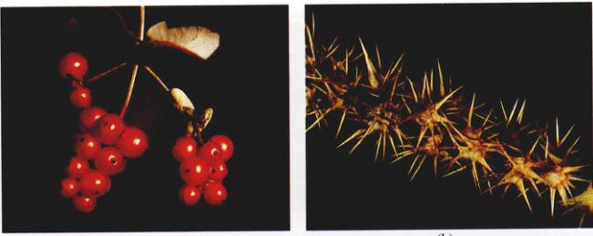
图 40.12 靠动物传播的果实 (a) 这种忍冬 Lonicera hispidula 鲜红的浆果非常吸引鸟类。鸟类食用果实后带着种子远行。种子通常留在它们体内，或者由于果肉具有黏性而黏在鸟的足上或者其他部位。(b) 只要你从一丛禾本科植物 Cenchrus incertus 的多刺的果实旁经过，你就能理解它们是多么容易地黏到任何从它们旁边经过的动物了。
应传播。图 40.11 展示了一些果实类型之间的不同处。三层子房壁各有不同的命运，从而形成了多种多样的果实类型，或为肉质，或为干果，或为坚果。种子则通过一系列机制从果实中释放出来。从发育的角度看，果实为一个拥有三种基因型的诱人器官。种子拥有来源于上个孢子体世代的种皮，产生卵的配子体世代的残余物，以及代表下一个孢子体世代的胚。
果实的传播
果实不仅形成方式多样，而且有多种不同的独特传播方式。有些果实有肉质果皮，经常呈亮黑色、亮蓝色或鲜红色，通常靠鸟类或者其他脊椎动物传播（图 40.12a）。像红花一样，红色果实也能暗示具有充足的食物供应。通过取食这些果实，鸟类和其他动物能将将它们传播到一个地方带到另一个地方，从而将植物从一个适宜的环境传播到另一个环境。
像锋芒草 (burgrass) 那样带钩刺的果实是一些生长在北方落叶林中的植物的典型代表（图 40.12b）。它们的果实总是通过包括人在内的哺乳动物来传播的，如松鼠能传播和掩埋橡子及其他一些坚果的果实。而其他的植物，如枫树、榆树和白蜡树的果实，有翅帮助它们靠风传播。蒲公英是另一个我们熟悉的以风媒方式传播的例子（图 40.13）。马利筋 (milkweed)、柳树和棉白杨的种子传播方式也是类似的。兰花的种子如灰尘般细小，也是靠风传播的。
椰子以及其他在海滩上或在海滩附近生长的植物通常靠水传播种子（图 40.14）。这种传播方式有助于植物征服像夏威夷那样遥远的孤岛群岛。据统计，大约有 175 种被子植物的种子，即北关所有物种的 1/3，已经传播到夏威夷，成为今天在那里繁衍的 970 多种物种的一部分。其中一些是靠风传播的，另一些是通过黏在鸟的...
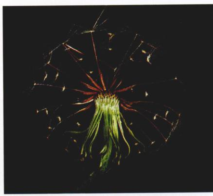
图 40.13 靠风传播的果实 一种假蒲公英 Pyrrhopappus carolinanus。这个“降落伞”借助风力广泛传播、假蒲公英荚果，令除草者防不胜防，大失所望。
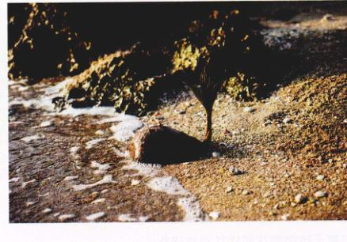
图 40.14 靠水传播的果实 椰子 (Cocos nucifera) 的果实正在沙滩上萌发。作为热带区域对人类最重要的果实之一，椰子随波漂流，能够在很远的岛上生息、繁衍。
Page 11 / 原始页码 777
羽毛上或者留在鸟的内脏中而带过去的，还有一些则是飘洋（太平洋）过海了。虽然种子的传播距离很少像夏威夷和大陆之间那样远，但是对于那些在高山顶、沼泽地或者面北的绝壁等不连续生境中生存的大陆植物来说，种子的传播也是同样重要的。
40.4 种子萌发启动种子后发育
当条件合适时，胚脱离原先的干燥状态，利用储备的营养物继续生长。萌发是个过程，但也常被定义为胚根冲破种皮的事件。随着孢子体冲破种皮，它确立环境取向，使得根能够向下生长，而茎则向上生长。新生的长源于脆弱的分生组织，组织通常受到保护，以免遭受恶劣的环境。茎开始进行光合作用，生长和发育的胚后期也随之开始了。
40.4.1 种子萌发的机制
种子萌发是植物在种皮外发育的第一步。当种子吸水后开始萌发，它的新陈代谢也重新开始。种子吸收大量的水分，从而产生了一种足以冲破种皮的力量。此时，能利用氧气对胚的发育是很重要的，因为植物像动物一样也要利用氧气进行细胞呼吸。只有少数植物能在水里成功萌发的种子，譬如水稻，它已经进化出对缺氧环境的耐受力。
一颗休眠的种子即使已经吸收了大量的水分，一直呼吸，合成蛋白质和 RNA，并进行正常的新陈代谢，但如果缺乏外在的环境信号仍然是无法萌发的。这个信号可以是适当波长和强度的光照，可以是一连串的低温天气，或者仅仅是经历一段适宜萌发的温度。许多植物的种子只有在低温下保存一段时间后才能萌发。这种现象使得在寒冷的地区生长的植物种子只有在经过冬天之后才会萌发，从而使幼嫩的种子免受严酷的寒冷环境的影响。
虽然某些物种或者某些特定的环境对种子萌发有相对严格的温度范围要求，但一般而言，萌发可以在很宽的温度范围内进行（5～30℃）。另外一些特殊的种子即在最好的温度条件下也不会萌发。在某些物种中，同一一季节的种子有一部分仍然保持休眠状态。这部分种子是很有意义的，它们为将来的植物种群提供了具有重大进化意义的基因库。

图 40.15 茎的发育 本图显示了 (a) 双子叶植物菜豆 (Phaseolus vulgaris) 和 (b) 单子叶植物玉米 (Zea mays) 的不同发育阶段。
Page 12 / 原始页码 778
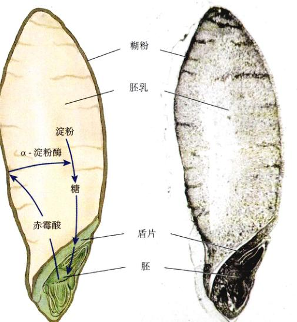
图 40.16 激素对幼苗生长的调节 萌发中的大麦胚对储存在胚乳中的淀粉的利用是通过释放激素——赤霉酸 (GA) 来实现的。赤霉酸导致胚乳外层（糊粉层）产生消化淀粉的 α-淀粉酶。α-淀粉酶将淀粉水解成葡萄糖，后者再经过盾片（子叶）传送至胚，从而为胚的生长提供能量。另外一种激素——脱落酸 (ABA) 对种子休眠非常重要。它会随着种子的吸水而稀释。当有过量的 ABA 存在时，GA 诱发的 α-淀粉酶的产生将被抑制。
储备营养的利用
当所有的外部条件都满足时，种子开始萌发。种子萌发和幼苗的早期生长需要利用储存在淀粉粒和蛋白体中的有机物。在有些种子中，脂肪和油脂也是重要的能量储备形式。在种子萌发时，这些营养资源能够被轻易分解，产生甘油和脂肪酸，通过细胞呼吸释放能量。当然它们也能被转化为糖类。根据植物种类的不同，植物将储备能量储存在胚或胚乳中。
在去壳的谷粒中，唯一的一片子叶特化为盾形，称为盾片 (scutellum)（图 40.15）。种子萌发时，储存在盾片中的物质先于胚乳消耗，而当幼苗开始形成时，盾片就作为胚乳向其余部分传输能量的通道。这里有一个植物激素如何调节发育的很好的例子（图 40.16）。胚产生一种叫赤霉酸的激素，这种激素能诱导胚乳外层的糊粉 (aleurone) 层产生 α-淀粉酶。该酶负责将储存的淀粉分解成葡萄糖，后者再由盾片传给胚。脱落酸是另外一种与种子休眠有关的重要的植物激素，它能够抑制淀粉分解。种子吸水时脱落酸的含量可能会降低。
在种子萌发期间，根和茎的出现方式随物种的不同而千变万化。大多数植物的根比茎先出现，然后靠它将幼苗固着在土壤里（图 40.15）。对于像豌豆、玉米那样的植物，子叶一般被留在地底下，而另外一些像菜豆、萝卜和洋葱那样的植物，其子叶则长出土面。子叶可能变绿，也可能不变绿，它在幼苗长出成时提供营养。从种子萌发到幼苗长成的这一段时间对植物的存活是非常关键的，因为幼苗在这段时期很容易因干旱或者其他疾病而死亡。
Page 13 / 原始页码 779
小 结
40.1 植物胚的发育奠定了植株的雏形
- 细胞分裂和伸展的方向决定植株的外形。
- 通过调节细胞的分裂和分化，3 个组织系统呈放射状形成。
- 茎尖和根尖的分生组织不断产生新组织，进而分化出植株的各个部位。
- 碳水化合物、脂类、蛋白质储存在胚乳或者子叶中以供种子萌发时用。
40.2 种子防止休眠期的胚失水
- 当胚发育结束时，围绕胚的胚珠壁（珠被）变硬形成种皮以保护胚。
- 种子形成后，胚便进入休眠期，直到遇到更适宜的条件再继续生长。
40.3 果实的形成有利于种子的传播
- 果实是被子植物的一个创新，它由围绕珠子的子房壁（特化的叶子）发育而来。
- 就传播方式而言，果实是非常多样的。它们往往带有翅、倒钩或者其他有利于传播的结构。果实的传播方式对于物种征服岛屿或者其他遥远的适合生长的环境是尤其重要的。
40.4 种子萌发启动种子后发育
- 种子中，胚和它的营养源被一张有时候很硬且相对不通透的种皮包围。种皮在萌发前需要被磨破。气温或者经过动物消化道对于启动萌发可能是必需的。
- 当温度、阳光和水分条件适宜时，种子开始萌发。有时候，萌发前还需要一段时期的低温。这种适应性能确保种子经过寒冷的季节后再萌发。
- 萌发时，储备物质的转化很重要。激素控制这一过程。
问 题
- 细胞分裂的方式调控胚的形态。试描述球形胚期产生原表皮层的外层细胞的细胞分裂方式。
- 什么证据可以证明茎分生组织是从根单独遗传转化而来的这一观点？
- 为什么种子的适应性是重要的？当种子显示能进行正常的呼吸，能合成蛋白质和核酸，并进行其他正常的代谢活动时，为什么它仍然不能萌发？
- 为什么产生果实对植物是有利的？果实的基因型和胚的基因型关系如何？种皮的基因型与果皮的基因型关系如何？
- 试解释种子萌发时，胚是如何传递信号给胚乳从而获得生长所需的糖分的？
- 为什么胚根先出现？